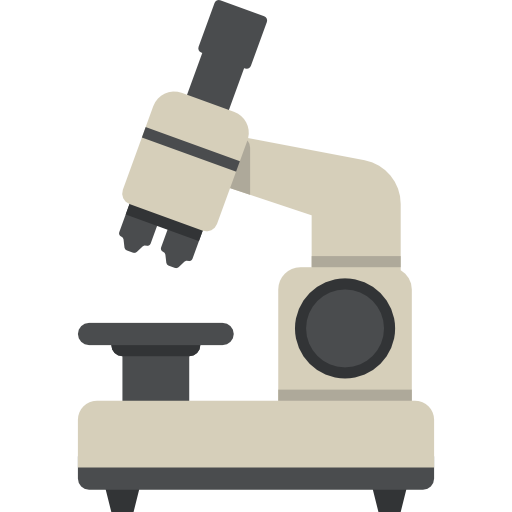

Este es un prototipo de un sistema multimedia,
en el cual, se que hace uso de la realidad
aumentada (RA), que permita visualizar dos
dispositivos de laboratorio para ingeniería
biomédica mediante modelos 3D.
Equipos Biomédicos
Un equipo médico es cualquier dispositivo usado para
diagnosticar, curar o tratar una enfermedad o para
prevenirla. Van desde pequeños y simples, como un medidor
de glucosa en la sangre, a grandes y complejos, como un
ventilador mecánico.

Microscopio
Sabías que el microscopio electrónico puede
magnificar objetos hasta un millón de veces.
Saber más.
Glucómetro
Sabías que el primer glucómetro portátil
fue desarrollado en 1969, revolucionando el
manejo de la enfermedad.
Saber más.
Ingeniería Biomédica
La ingeniería biomédica es el resultado de
la aplicación de los principios y técnicas
de la ingeniería al campo de la medicina y
la Biología.
Laboratorio de Ciencias Biomédicas
Brinda a los estudiantes habilidades en la
realización de técnicas analíticas, manejo
de equipos para materiales biológicos e
inorgánicos y reactivos, manejo de equipos
biomédicos para el procesamiento de señales
fisiológicas; permitiendo la correlación en
la práctica de los conceptos teóricos adquiridos.
Ubicación
Dentro de la universidad contamos con un laboratorio
de ciencias biomédicas, el cuál, está totalmente
equipado y a disposición de sus estudiantes. Está
ubicado en sótanos 1, al fondo en el lado izquierdo,
justo al lado del laboratorio de física.